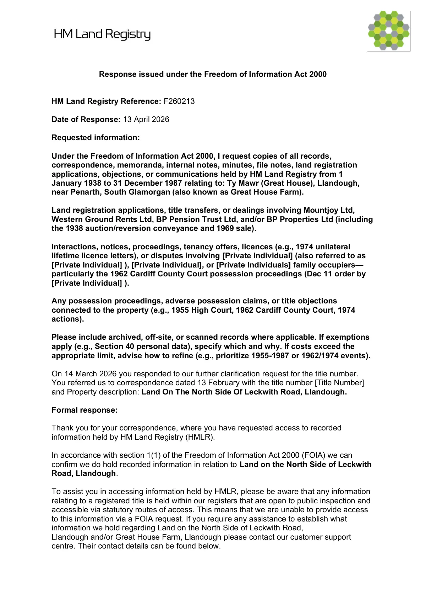

GHF-E106-R35-A1 redirected elsewhere
FOI F260213 response

Transcript
Response issued under the Freedom of Information Act 2000 HM Land Registry Reference: F260213 Date of Response: 13 April 2026 Requested information: Under the Freedom of Information Act 2000, I request copies of all records, correspondence, memoranda, internal notes, minutes, file notes, land registration applications, objections, or communications held by HM Land Registry from 1 January 1938 to 31 December 1987 relating to: Ty Mawr (Great House), Llandough, near Penarth, South Glamorgan (also known as Great House Farm). Land registration applications, title transfers, or dealings involving Mountjoy Ltd, Western Ground Rents Ltd, BP Pension Trust Ltd, and/or BP Properties Ltd (including the 1938 auction/reversion conveyance and 1969 sale). Interactions, notices, proceedings, tenancy offers, licences (e.g., 1974 unilateral lifetime licence letters), or disputes involving [Private Individual] (also referred to as [Private Individual] ), [Private Individual], or [Private Individuals] family occupiers— particularly the 1962 Cardiff County Court possession proceedings (Dec 11 order by [Private Individual] ).
Read more
Any possession proceedings, adverse possession asserts, or title objections
connected to the property (e.g., 1955 High Court, 1962 Cardiff County Court, 1974
actions).
Please include archived, off-site, or scanned records where applicable. If exemptions
apply (e.g., Section 40 personal data), specify which and why. If costs exceed the
appropriate limit, advise how to refine (e.g., prioritize 1955-1987 or 1962/1974 events).
On 14 March 2026 you responded to our further clarification request for the title number.
You referred us to correspondence dated 13 February with the title number [Title Number]
and Property description: Land On The North Side Of Leckwith Road, Llandough.
Formal response:
Thank you for your correspondence, where you have requested access to recorded
information held by HM Land Registry (HMLR).
In accordance with section 1(1) of the Freedom of Information Act 2000 (FOIA) we can
confirm we do hold recorded information in relation to Land on the North Side of Leckwith
Road, Llandough.
To assist you in accessing information held by HMLR, please be aware that any information
relating to a registered title is held within our registers that are open to public inspection and
accessible via statutory routes of access. This means that we are unable to provide access
to this information via a FOIA request. If you require any assistance to establish what
information we hold regarding Land on the North Side of Leckwith Road,
Llandough and/or Great House Farm, Llandough please contact our customer support
centre. Their contact details can be found below.
Statutory Routes of Access to information held on Public Registers
The Land Registration Act 2002 is the principal legislation governing land registration in
England and Wales. It sets out provisions for keeping a register of title to land and property,
and in accordance with Section 66 & 67 of the Land Registration Act, it is a requirement that
the Chief Land Registrar makes this information (including any documents held on the
register of title) available for public inspection.
How to access information held on our Registers
The information you have requested is available to access under our statutory protocol
under section 66 & 67 of the Land Registration Act 2002.
Search for Land and Property
Please visit our website for further information about our registers:
www.gov.uk/get-information-about-property-and-land
Official Copies
Any documents held in relation to a title or an application can be obtained by completing an
OC2 form and paying the appropriate fee.
For information about how to apply for official copies of documents held in relation to
registered titles, and information about the types of documents available, please refer to
practice guide 11:
www.gov.uk/government/publications/inspection-and-application-for-official-copies/practice-
guide-11-inspection-and-application-for-official-copies
Section 21 FOIA exemption: Information accessible to the applicant by other means
Where information held on the register of title is available for inspection through these
statutory routes of access it is exempt from disclosure under section 21(2)(b) of FOIA.
Section 21 states:
“21 Information accessible to applicant by other means.
(1) Information which is reasonably accessible to the applicant otherwise than under
section 1 is exempt information.
(2) For the purposes of subsection (1)—
(a) information may be reasonably accessible to the applicant even though it is
accessible only on payment, and
(b) information is to be taken to be reasonably accessible to the applicant if it is
information which the public authority or any other person is obliged by or under any
enactment to communicate (otherwise than by making the information available for
inspection) to members of the public on request, whether free of charge or on
payment.”
Therefore, we are unable to provide the information requested through FOIA and this
response acts as a refusal notice in accordance with this exemption.
In relation to paragraph three of your request:
Interactions, notices, proceedings, tenancy offers, licences (e.g., 1974 unilateral
lifetime licence letters), or disputes involving [Private Individual] (also referred to as
[Private Individual] ), [Private Individual], or [Private Individuals] family occupiers—
particularly the 1962 Cardiff County Court possession proceedings (Dec 11 order by
[Private Individual] ).
FOIA disclosures are not discreet or confidential disclosures to a single person but
are instead made to the world at large. Therefore, when we handle requests for information
under FOIA we need to consider the wider impact of disclosure into the public domain.
We have considered the impact of disclosing information relating to the private individuals
and have determined that disclosure of this information would be likely to cause
prejudice and breach their data protection rights.
We therefore consider the exemption provided at section 40 of FOIA to be engaged.
Section 40 of FOIA
The individuals would have a reasonable expectation HM Land Registry would not disclose
information about them into the public domain. As such, disclosure into the public domain
would be unfair and a breach of their rights under UK data protection legislation.
The Section 40 exemption applies where the requested information is personal data and
where disclosure of the requested information would be a breach of any of the principles of
data protection law contained within UK data protection legislation. The first principle
requires that disclosure of the information must be fair and lawful.
The purpose of data protection law is to protect people’s personal data and to ensure that it
is handled properly. Personal data is information that relates to an identified or identifiable
individual.
It is our view that releasing such information relating to the private individuals would be a
breach of the data protection rights of those individuals under UK data protection legislation.
UK data protection legislation regulates the use of "personal data" and the processing of that
data.
Advice and assistance
Under Section 16 of FOIA and in accordance with the Section 45 FOIA code of practice, we
have a duty to provide you with reasonable advice and assistance.
Please note that the ICO has previously reviewed HM Land Registry’s use of the section 21
exemption. Relevant decision notices can be accessed here including IC-173302-N4J1,
FS50685812 and FER0454056.
The ICO has agreed that this position is long established, and the Commissioner is satisfied
that section 21 would be engaged for this type of request.
For assistance on how to obtain official copies of documents you can contact our Customer
Support Centre by telephone between 8am and 4.30pm, Monday to Friday on 0300 006
0411 or online through our Contact Us form.
Our Customer Support colleagues are trained to handle queries which relate to information
that is held on the register of title.
Information about how to apply to inspect or obtain official copies is contained with practice
guide 11:
www.gov.uk/government/publications/inspection-and-application-for-official-copies/practice-
guide-11-inspection-and-application-for-official-copies
If you need any support completing the application form for official copies or to determine
which documents to order, you may contact our Customer Support colleagues:
www.gov.uk/guidance/contact-hm-land-registry
You may also refer to our Publication Scheme which includes information about how to
access information that is held on the register of title under the heading ‘Request
information’:
www.gov.uk/government/organisations/land-registry/about/publication-scheme#request-
information
Please refer to HMLR’s Transaction Data webpage which contains information in respect of
commonly used abbreviations:
www.gov.uk/guidance/hm-land-registry-transaction-data#abbreviations-used-in-transaction-
data
If you need any independent advice about individual’s rights under information legislation
you can contact the Information Commissioner’s Office (ICO). The ICO is the UK’s
independent authority set up to uphold information rights in the public interest, promoting
openness by public bodies and data privacy for individuals.
The contact details for the ICO are detailed below. There is useful information on the ICO
website which explains the rights of individuals:
www.ico.org.uk/for-the-public
Please refer to the top tips:
www.ico.org.uk/for-the-public/official-information
Internal Review procedure
If you are dissatisfied with this response, you may request an independent internal review of
our handling of your request.
Requests for an internal review should be made within 40 working days from the date we
have issued this response. In accordance with Section 45 FOIA code of practice
(www.gov.uk/government/publications/freedom-of-information-code-of-practice) public
authorities are not obliged to accept internal reviews after this period.
Please clearly indicate the reason(s) for requesting the review to assist in our investigation
and review process, which will focus upon our handling of your request and whether HMLR
has complied with the requirements of the Freedom of Information Act 2000.
Requests for an independent internal review of your request should be made to:
Information Rights Team
HM Land Registry
[address redacted]
Croydon
[address redacted]
Requests for an internal review should be made within 40 working days from the date we
have issued this response. In accordance with Section 45 FOIA code of practice public
authorities are not obliged to accept internal reviews after this period.
E-mail: [email redacted]
If you are unhappy with other aspects of HM Land Registry’s actions, please see our website
for information on how to raise a concern or complaint:
www.gov.uk/government/organisations/land-registry/about/complaints-procedure
Further rights of appeal exist to the Information Commissioner’s Office under Section 50 of
the Freedom of Information Act 2000 once the internal review process has been exhausted.
Information Commissioner's Office
[address redacted]
Wilmslow
[address redacted]
Telephone Helpline: [phone redacted]
Website: www.ico.org.uk/foicomplaintsArtifact description
Confirms information on the title is held but states it must be accessed through statutory land registration routes, not FOIA.
| Catalogue ID | GHF-E106-R35-A1 |
|---|---|
| What it is | PDF document from HM Land Registry. Attached to an email received on 13 April 2026, their reference F260213. 5 pages. |
| From | HM Land Registry |
| Email received | 13 April 2026 |
| Their reference | F260213 |
| Pages | 5 |
| File | F260213.pdf (148 KB) |
| State | Read |
Our integration
Part of the FOI thread with HM Land Registry opened 16 February 2026. The thread's standing classification is “redirected elsewhere”. Statutory time: met.
Concern to test: whether this reply answers the question as asked, or a narrower one. Not checked against the original request wording here.
Related: The covering email · What They Don’t Say: WTDS-5fd6227f-1 · EV-0350 in the evidence catalogue · Timeline · Disclosure Dartboard